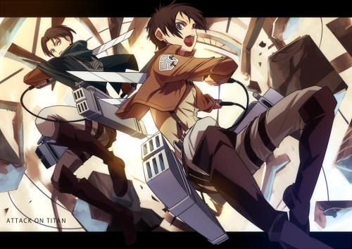
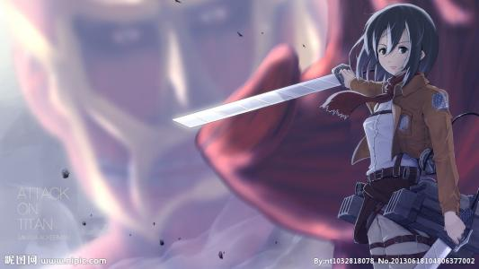

剧情介绍
 107年前（743）年，世界上突然出现了人类的天敌“巨人”，面临着生存危机而残存下来的人类逃到了一个地方，盖起了三重巨大的城墙。人们在这隔绝的环境里享受了一百多年的和平，直到艾伦·耶格尔十岁那年，60米高的“超大型巨人”和“铠之巨人”突然出现，以压倒性的力量破坏城门，其后瞬间消失，巨人们成群的冲进墙内捕食人类。
艾伦亲眼看着人们以及自己的母亲被巨人吞食，怀着对巨人无法形容的憎恨，誓言杀死全部巨人。城墙崩坏的两年后，艾伦加入104期训练兵团学习和巨人战斗的技术。在训练兵团的三年，艾伦在同期训练兵里有着其他人无法比拟的强悍精神力，即使亲眼见过地狱也依然勇敢的向巨人挑战的艾伦，如愿以偿加入了向往已久的调查兵团。
就在加入兵团前一天，超大型巨人突兀再次出现，并且踢破了第二道墙壁的门，无数巨人涌进。艾伦等同期训练兵们与他们进行战斗，可是艾伦为了救其挚友艾尔敏却被巨人生生吞下。而艾伦另一好友三笠也同时陷入了被巨人包围的困境。这时候，一名类似艾伦的巨人出现了，并救下了三笠。
事后发现，这名巨人的确是艾伦。为了保证艾伦的安全性，将其送去调查兵团利维尔班监督，同时证实了一些人类也可以变成巨人。
在一次壁外调查时，出现了一名拥有智慧的女型巨人。调查兵团与其进行生死战斗，但却让其逃跑
在艾尔敏的分析下，条条证据指向同期训练兵——亚妮。艾伦在壁内与巨人化的亚妮搏斗，最后将亚妮制伏，但亚妮却用金刚石将自己包围，以防透露情报。同时发现了“壁”是由巨人组成的，但其原因神父却不愿透露。
又一天，同期训练兵莱纳与胡佛将艾伦叫到一边，澄清他们是超大型巨人和铠之巨人，并希望艾伦跟他们走。艾伦拒绝，他们只好巨人化强行带走艾伦。同时能巨人化的人类（好坏未知，两边倒）尤弥尔也跟他们一同离开。调查兵团为了夺回他们进行了争夺战，夺回了艾伦。争夺战期间，一名士兵发现了一直猩猩巨人，能够说话，并且把士兵身上的立体机动装置夺走研究。
调查兵团为了拯救全人类，只能和王开战。为了获得资金，兵长和商会会长合作。但会长被第一宪兵的人所杀，并被污蔑是调查兵团所为，让调查兵团在群众严重的印象变差，并通缉调查兵团全员。
在兵长潜逃过程中，第一宪兵用“对人立体机动装置”追杀，最终脱离。为了夺回在群众眼中的威信，看见一切事实的会长儿子用计谋使得第一宪兵说出了真相，让群众化解了调查兵团误会。
